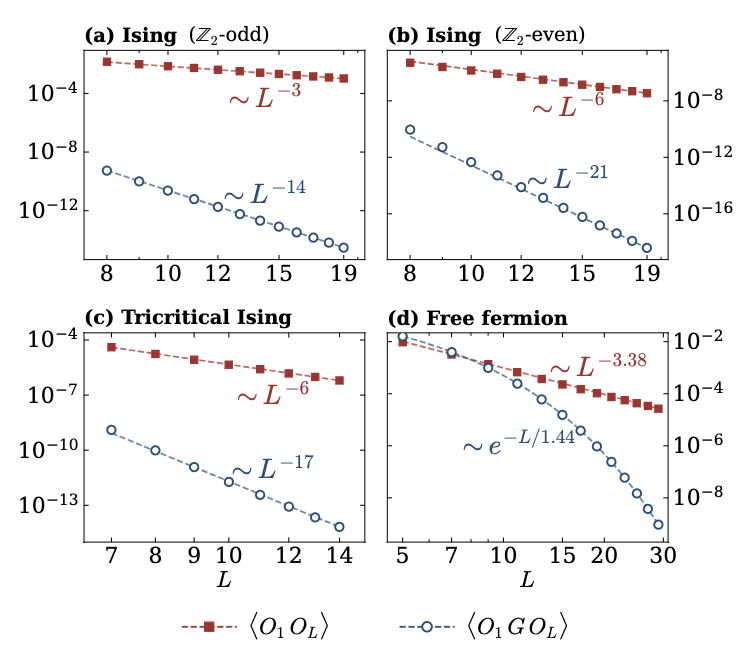

I'm a physicist with a background in mathematics, interested in symmetry, topology, and beyond-perturbative methods in many-body systems, from quantum condensed matter and statistical mechanics to high-energy physics. This is my personal website.
We are running a CMT Journal Club on Wednesdays at 11am-12pm (pre-talk) and 3-4pm (research talk) in the Schwinger lounge. Email me and I will add you to the email list.
I am admin of the anomalology discord. Send me an email and I will send you an invite!
You can contact me at first dot last at physics dot ucla dot edu and you can find me in Knudsen 6-137C.

With Conrad Wichmann and Ruben Verresen we study correlation vs. causation in quantum critical points exploring more deeply the mechanisms for the tiny 1/L^14 edge mode splittings of our old paper, uncovering a mechanism that works even beyond 1+1d, finding some new numerical probes of the 2+1d Ising CFT, and possibly a new primary.
We showed that self-correcting classical memory in the 3d Wegner gauge theory is stable to all small enough perturbations, using cluster expansion methods that show that gauge symmetries, if explicitly broken, are in some sense restored by fluctuations.
With Carolyn Zhang and Lei Gioia we showed that the equal mixture of all translation-invariant states is long-range entangled, using some neat counting techniques.
With Shuhei Ohyama and Takamasa Ando we constructed lattice models of topologically non-trivial families of toric codes and studied them with boundary algebra techniques.
With Pierluigi Niro and Thomas Dumitrescu we proposed a description of the Fradkin-Shenker multicritical point (toric code with an in-plane field) in terms of QED with fermions in 2+1d. Our story draws an unexpected connection between this multicritical point and deconfined quantum critical points in Neel-VBS and other "beyond Landau" quantum phase transitions.
With Lukasz Fidkowski and John Preskill we found disentanglers for anomaly-free combinations of chiral symmetries in 1+1D and 3+1D, opening a new path towards chiral gauge theories and the ultimate goal of realizing the Standard Model on the lattice.
With Sasza Czajka and Roman Geiko we studied anomalies of quantum lattice Hamiltonians which lead us to a definition of the loop spectrum of invertible states and a space of quantum cellular automata.
My postdoc Roman Geiko is looking for a job!
New kinds of topological states and phase transitions between topological phases.
Quantum error correction (aspirationally).
"Quantum cellular automata" and how they relate to gapped phases (check out our paper!)
Chiral gauge theories on the lattice (we recently made progress toward hypercharge in the Standard Model!)
The background of this page draws a randomly selected 5-state cellular automata, where a pixel's state depends only on the average of the previous state of itself and its two neighbors. There are 5^13 such rules. Press c to change the color scheme. Here is Toom's rule, a particularly interesting 2d 2-state automaton.
Here is a picture of me on a sand dune in Death Valley, excited to have found some scale invariant criticality in the wild! My hair is not as long now :)
{kind=link}